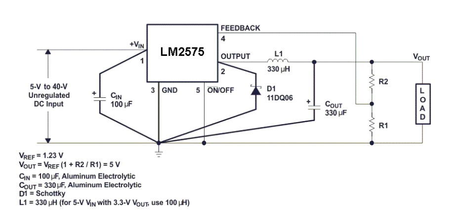
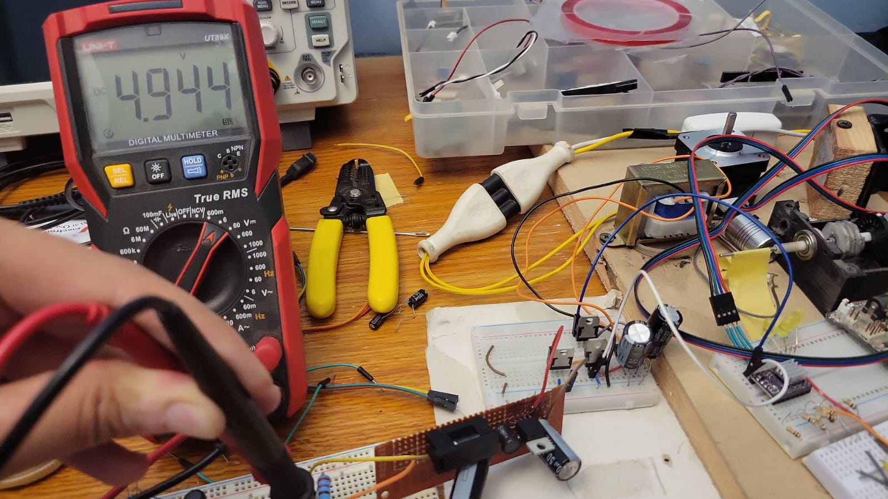

Overview
In this project I implemented a buck power module to output 5v using the lm2575 ic
Circuit design
The circuit design followed the data sheet specified components. The main constrain on inductor value, was availability. Now the data sheet specified an inductor of value 330uf, And available was one of value of 470uf which is bigger and therefore acceptable.

Implementation of circuit
The circuit was soldered unto a perfboard. the main constraint to consider was that the diode, input ground loop had to be as short as possible to minimize emi and and limit output voltage ripple. Additionally, a 1 A fuse was added to protect the components from over load.
Results



In the end, the buck module worked as designed, outputing 5v on any higher voltage input up to 40v. The process was simple and issue free to implement. For future projects, Id like to implement an SMPS.